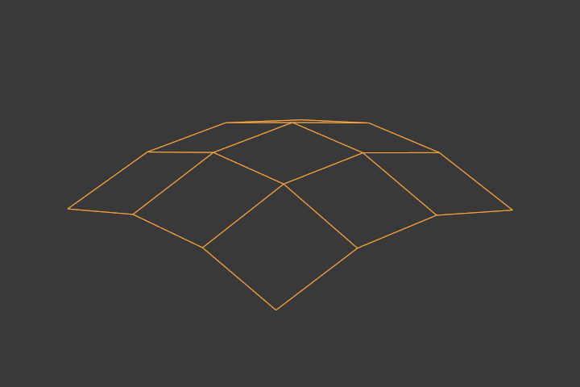
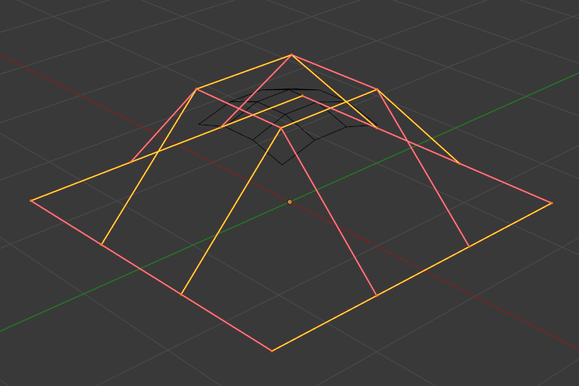

Properties¶
Surface Properties.
The panels of the Curve and Surface tab are the same as for curves, just with fewer options...
Shape¶

Shape panel.
You can adjust the resolution separately for both preview and render, to not slow things down in the viewport, but still get good render results.
- Preview
- U, V
- Render
- U, V
Active Spline¶
Closed and Open Surfaces¶
Like curves, surfaces can be closed (cyclical) or open, independently in both directions, allowing you to easily create a tube, donut or sphere shape, and they can be drawn as “solids” in Edit Mode. This makes working with surfaces quite easy.
Bézier¶
Endpoint¶
Just like with NURBS curves, NURBS surfaces have two knot vectors, one for each U and V axis. Here again, they can be one of Cyclic, Endpoint, or Bézier, with the same properties as for curves. And as with curves, only open surfaces (in the relevant direction) are affected by this setting...

Endpoint U.
In Fig. Endpoint U. the U interpolation axis is labeled as “U” and the V interpolation axis is labeled as “V”. The U’s interpolation axis has been set to Endpoint and as such the surface now extends to the outer edges from E1 to E2 along the U interpolation axis.
To cause the surface to extend to all edges you would set the V’s axis to Endpoint as well.
Order¶
One more time, this property is the same as with NURBS Curves; it specifies how much the control points are taken into account for calculating the curve of the surface shape. For high Orders 1 the surface pulls away from the control points, creating a smoother surface by assuming that the Resolution is high enough. For lowest Orders 2 the surface follows the control points, creating a surface that tends to follow the grid cage.

Order 2 and order 4 surface.
For illustration purposes, in both Fig. Order 2 and order 4 surface., the knot vectors were set to Endpoint, causing the surface to extend to all edges.
You can set independently the order for each interpolation axis, and like curves, it cannot be lower than 2, and higher than 6 or the number of control points on the relevant axis.
Resolution¶
Just like NURBS curves, Resolution controls the detail of the surface. The higher the Resolution the more detailed and smoother the surface is. The lower the Resolution the rougher the surface. However, here you have two resolution settings, one for each interpolation axis (U and V). Note that unlike with curves, you have only one resolution (the Resolution U and V fields, in the Curve Tools panel)...

|

|

Resolution 1×1. |

Resolution 3×3. |
Fig. Resolution 1×1. is an example of a surface resolution of 1 for both U and V. Fig. Resolution 3×3. surface is an example of a surface resolution of 3 for both U and V.